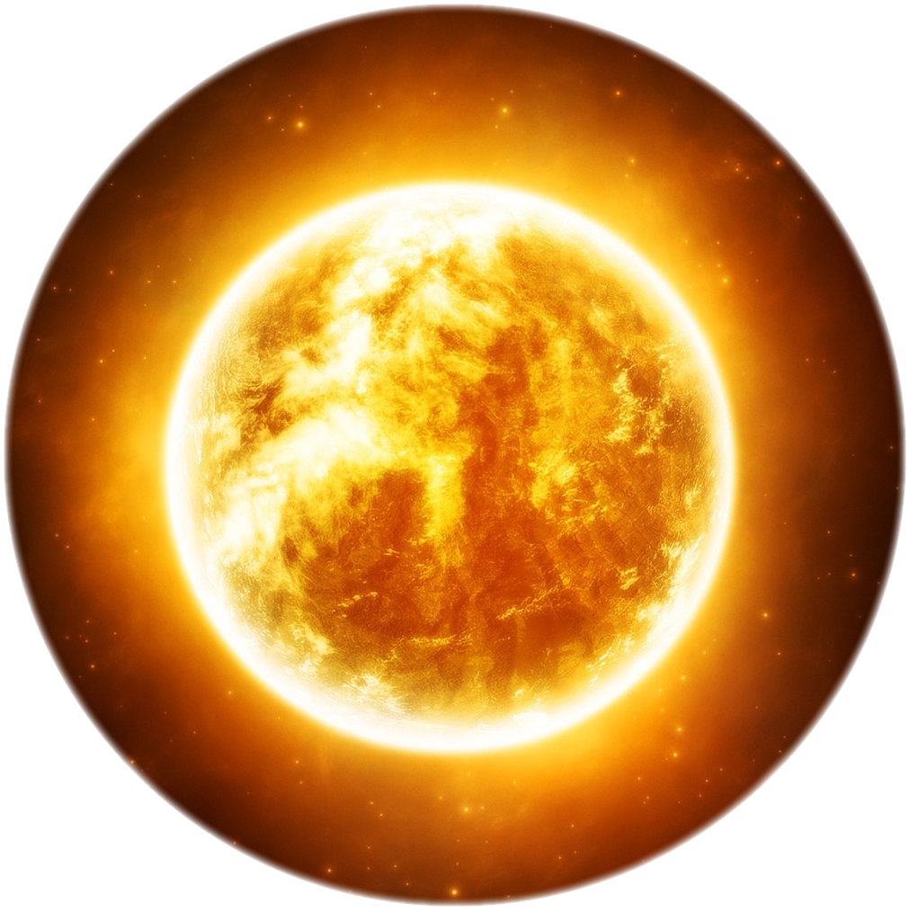
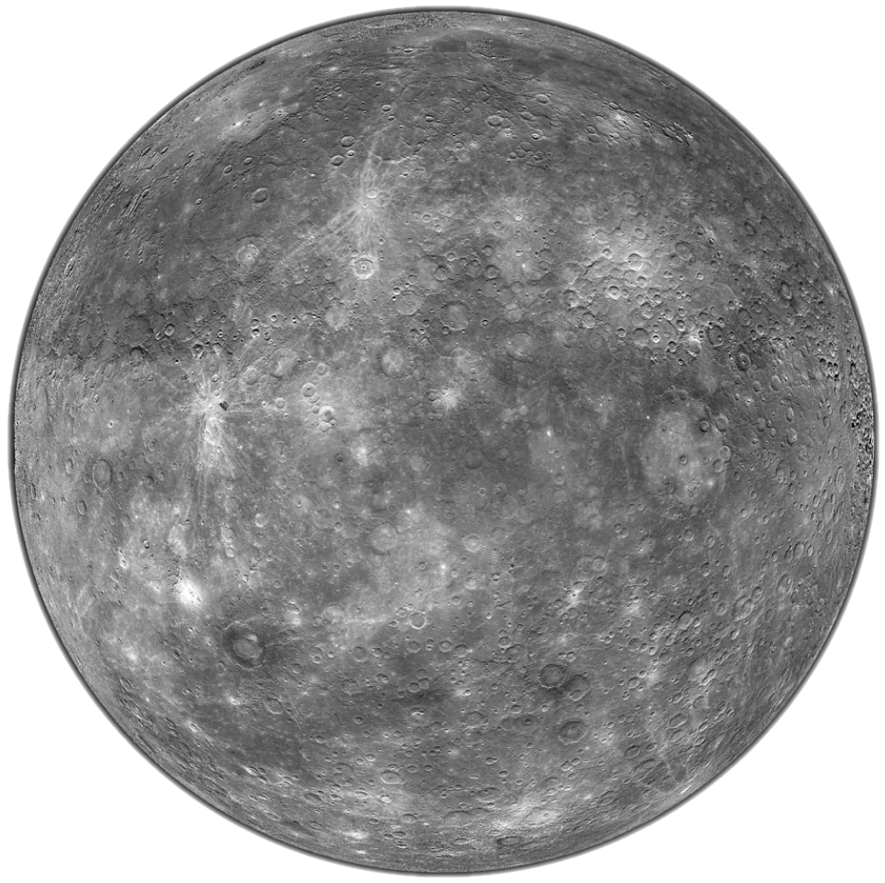
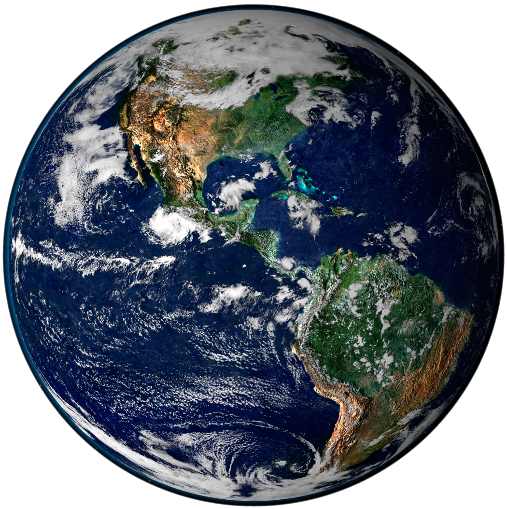
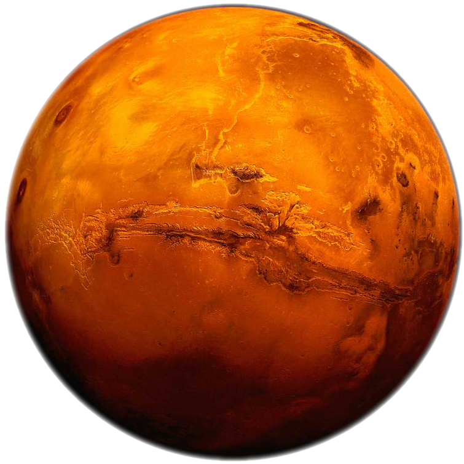
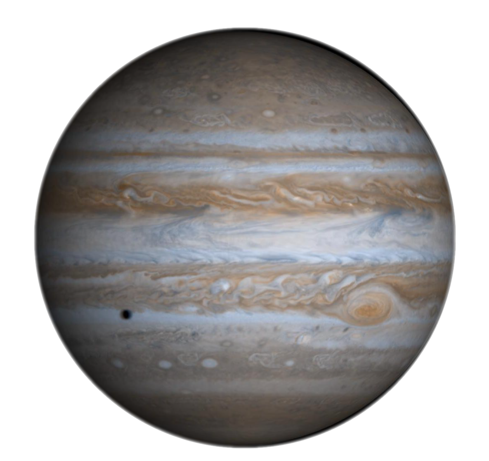
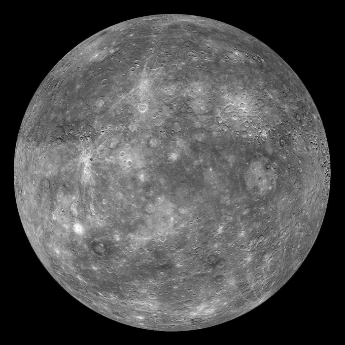
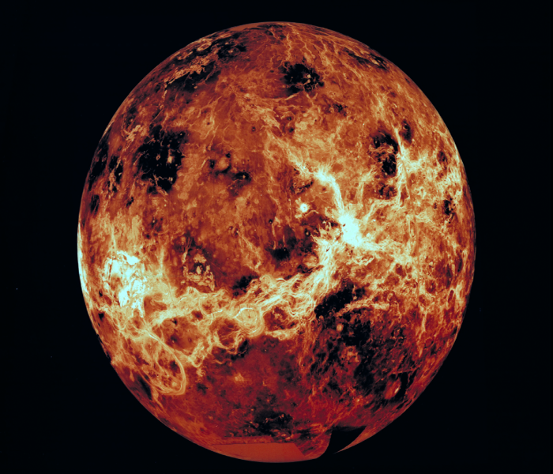
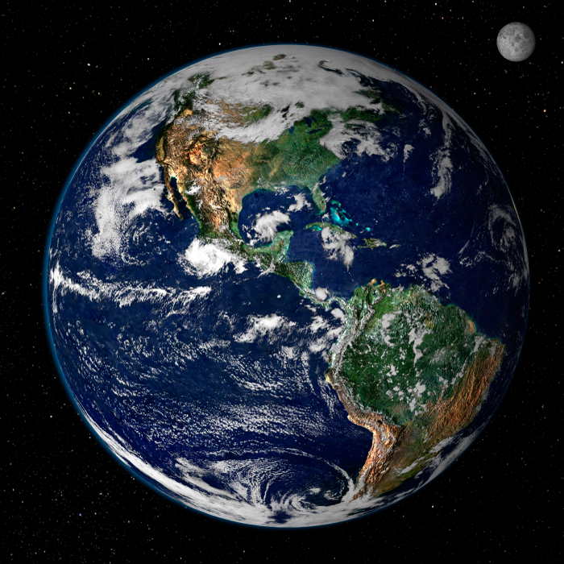
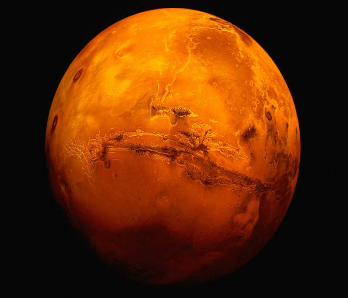
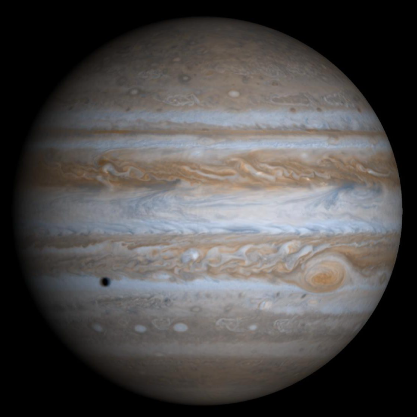

Mercury
- Mercury’s surface resembles that of Earth’s Moon, scarred by many impact craters resulting from collisions with meteoroids and comets.
- Mercury is the second densest planet after Earth, with a large metallic core having a radius of 1,800 to 1,900 kilometers, about 75 percent of the planet’s radius. In 2007, researchers used ground-based radars to study the core, and found evidence that it is molten (liquid).
- Mercury is the second densest planet after Earth, with a large metallic core having a radius of 1,800 to 1,900 kilometers, about 75 percent of the planet’s radius. In 2007, researchers used ground-based radars to study the core, and found evidence that it is molten (liquid).

Venus
- Venus and Earth are similar in size, mass, density, composition, and gravity. There, however, the similarities end. Venus is covered by a thick, rapidly spinning atmosphere, creating a scorched world with temperatures hot enough to melt lead and surface pressure 90 times that of Earth.
- Although we cannot normally see through Venus’ thick atmosphere, NASA’s Magellan mission to Venus during the early 1990s used radar to image 98 percent of the surface, and the Galileo spacecraft used infrared mapping to view mid-level cloud structure as it passed by Venus in 1990 on the way to Jupiter.

Earth
- Earth’s lithosphere, which includes the crust (both continental and oceanic) and the upper mantle, is divided into huge plates that are constantly moving.
- Earth is the third planet from the Sun and the fifth largest in the solar system. Earth’s diameter is just a few hundred kilometers larger than that of Venus. The four seasons are a result of Earth’s axis of rotation being tilted 23.45 degrees with respect to the plane of Earth’s orbit around the Sun.
- Earthquakes result when plates grind past one another, ride up over one another, collide to make mountains, or split and separate.
- -Our planet’s rapid rotation and molten nickel–iron core give rise to a magnetic field, which the solar wind distorts into a teardrop shape in space. (The solar wind is a stream of charged particles continuously ejected from the Sun.)

Mars
- Though details of Mars’ surface are difficult to see from Earth, telescope observations show seasonally changing features and white patches at the poles. For decades, people speculated that bright and dark areas on Mars were patches of vegetation, that Mars could be a likely place for life-forms, and that water might exist in the polar caps.
- Mars is a rocky body about half the size of Earth. As with the other terrestrial planets — Mercury, Venus, and Earth — the surface of Mars has been altered by volcanism, impacts, crustal movement, and atmospheric effects such as dust storms.

Jupiter
- The most massive planet in our solar system, with four large moons and many smaller moons, Jupiter forms a kind of min- iature solar system. Jupiter resembles a star in composition. In fact, if it had been about 80 times more massive, it would have become a star rather than a planet.
- The composition of Jupiter’s atmosphere is similar to that of the Sun — mostly hydrogen and helium. Deep in the atmosphere, the pressure and temperature increase, compressing the hydro- gen gas into a liquid. At depths about a third of the way down, the hydrogen becomes metallic and electrically conducting.